AR Artifact 2 — Jesse
Confrontation
This is one half of the final scene where Mateo is forced to confront the consequences of his decision and sees Kolin again.
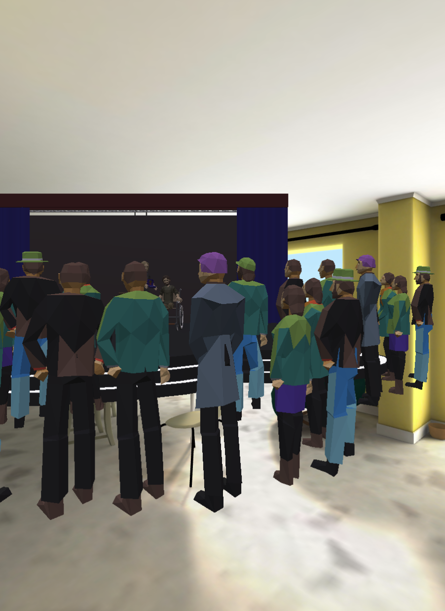
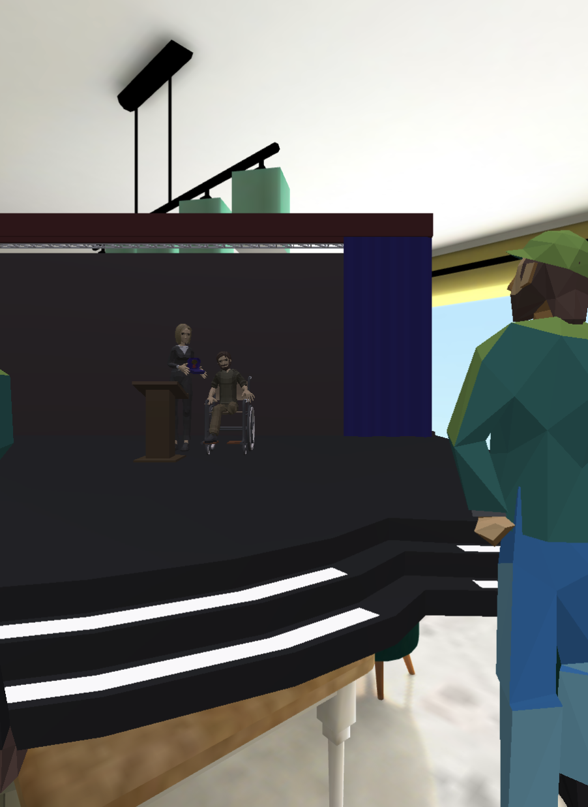
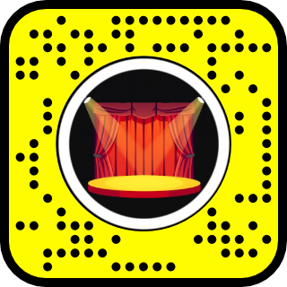
01
Overview
This is one half of the final scene where Mateo is forced to confront the consequences of his decision and sees Kolin again.
Instead of turning away, like in the previous AR artifact, users must physically move closer to a staged scene where Kolin is receiving an award. As the user approaches, the scene animates and leads to moment of recognition between Kolin and the user (Mateo).
02
Intent
The goal of this artifact was to represent Mateo’s confrontation with the consequences of his earlier decisions through spatial movement. I wanted users to control what they experience through proximity, where moving closer reveals the stage and animates it, mirroring how Mateo is forced to face what he once chose to ignore.
As users move forward the experience becomes more direct and unavoidable reinforcing the idea that even if the conflict is ignored at first, it cannot be escaped entirely.
03
Process
For this artifact I introduced a more complex pipeline where I created and animated the scene in Blender before importing the scene and triggering it the interaction in Lens Studio. I chose this process as opposed to creating it all in Lens Studio because Lens Studio had a much worse animating feature compared to Blender. I needed to create the minute movements required to showcase the emotions of the scene and Blender was a much better option to for that.
To begin I had to gather models, again using poly.pizza due to their low file and polygon size. But to create an accurate scene I had to edit models to match the narrative. This involved changing the materials of each model to create a darker tone, editing a male grizzled model into an amputee war veteran, combining different models to create a medal in a case, and combining said medal with another model’s hand so they’d be attached while animating. Though a tedious task it all culminated in making the next step of building and animating the scene much easier.
With the models finally prepared, I was able to put the final pivotal scene together with Kolin receiving an award on a stage surrounded by a crowd of people. Coming immediately from Lens Studio was a slight challenge as the navigation and UI were different.
The next steps in the process involved:
- Building and animating the scene in Blender
- Staging characters within the moment
- Exporting the scene into Lens Studio
- Triggering the interaction based on user proximity when user is close enough
The biggest challenges in this artifact were technical. After updating Lens Studio, previously working blender exports stopped functioning where at times models would import in a T-pose, lose their animation, or merge together after exporting. This led to a long troubleshooting process where I tested:
- Different export file types
- Animation baking methods
- Material settings
- Armature and mesh structures
To resolve this, I separated the animated models and exported them individually before doing a simple scene rebuild in Lens Studio.
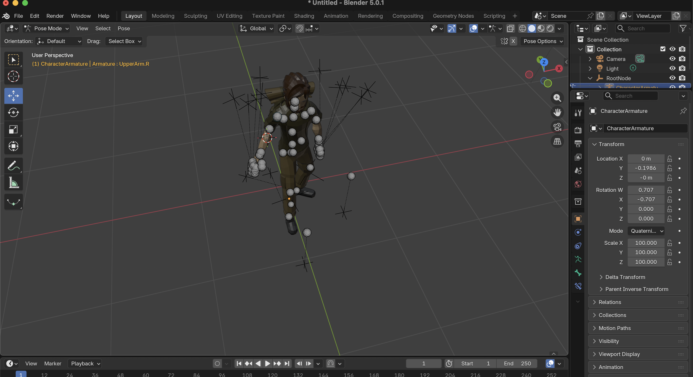
Initial Model for Kolin
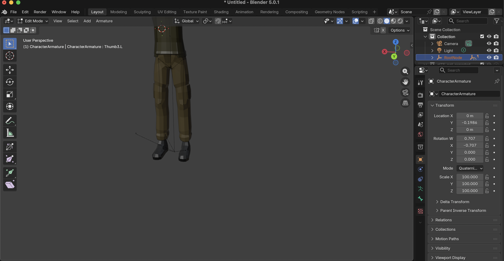
Model editing and preparation
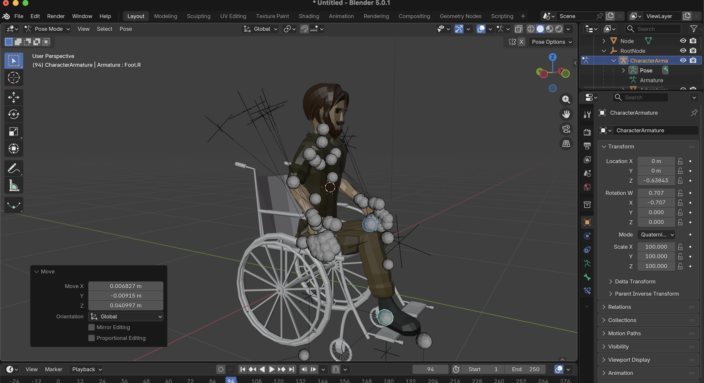
Combining edited Kolin model with wheelchair model
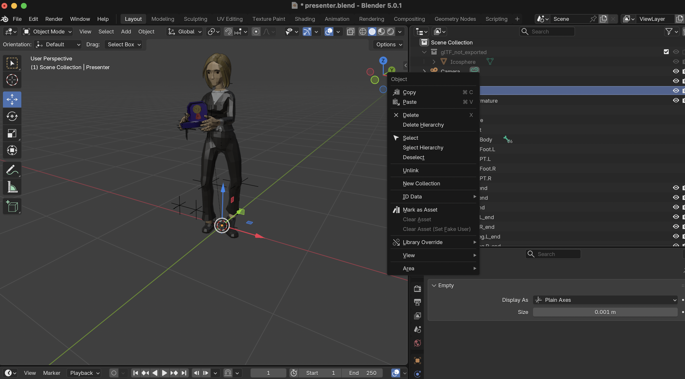
Creating the presenter model with medal
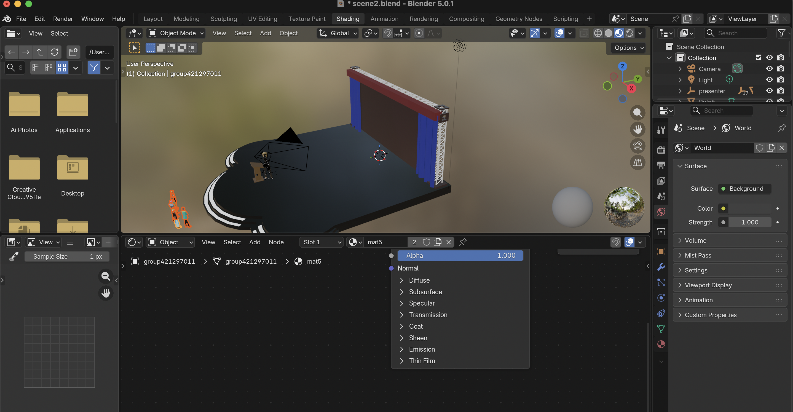
Building the final scene in Blender
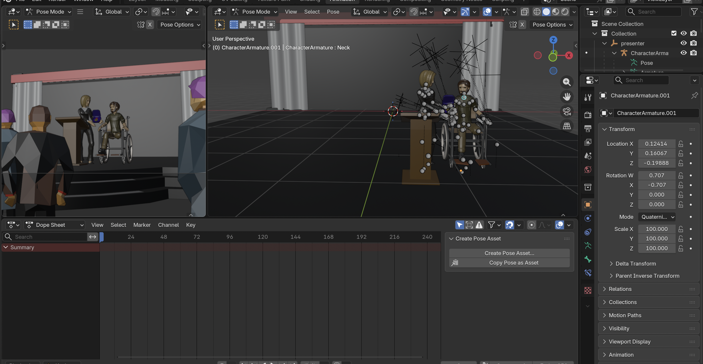
Animating the final scene in Blender
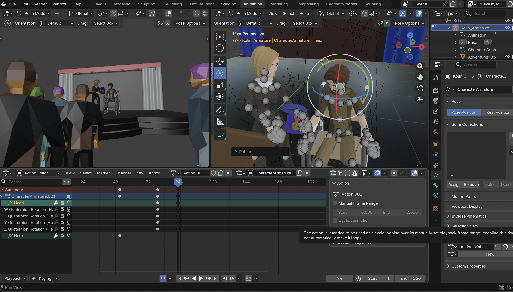
Animating head movement in Blender

Animating the scene in Blender
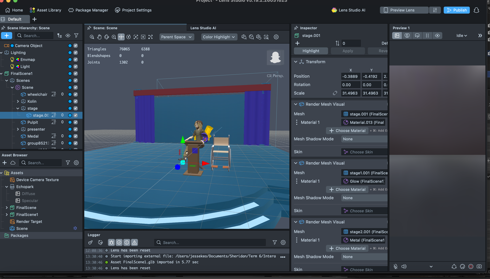
Models messed up during export
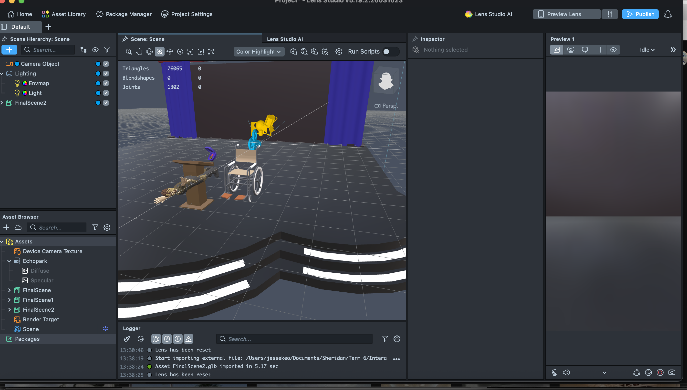
Models messed up during export in Lens Studio
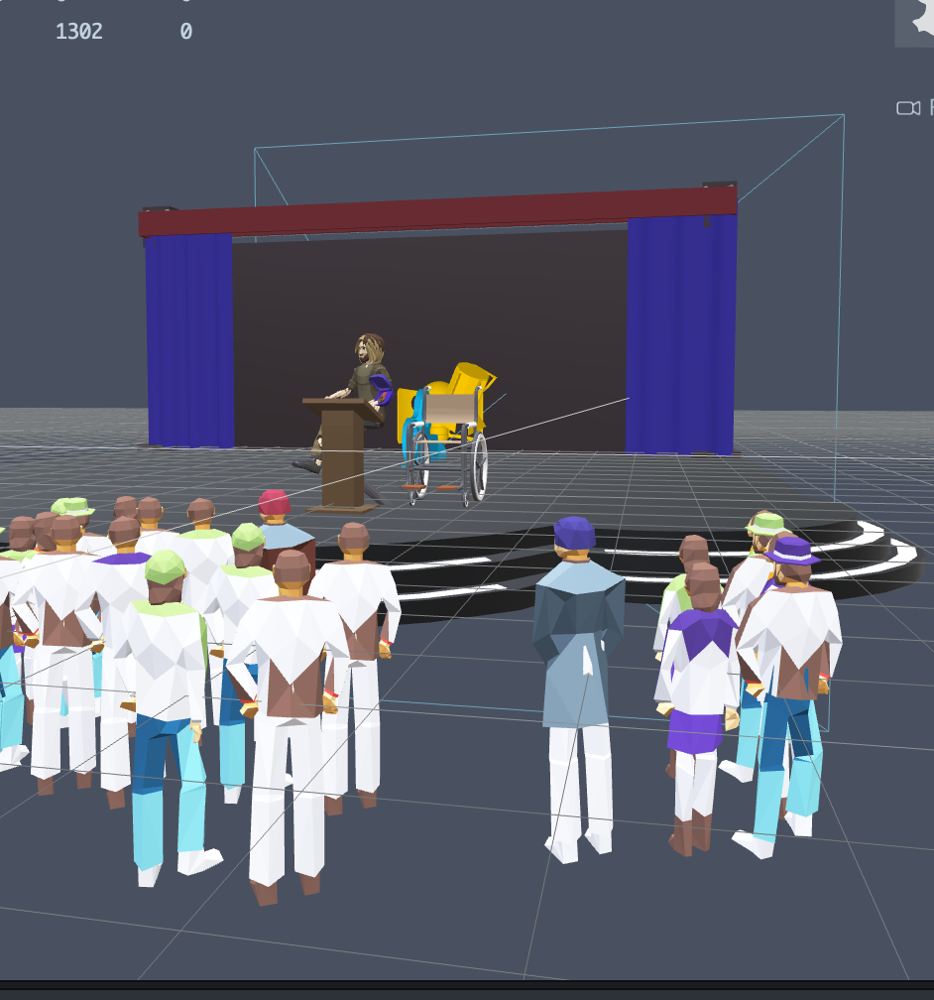
Models messed up during export in Lens Studio 2
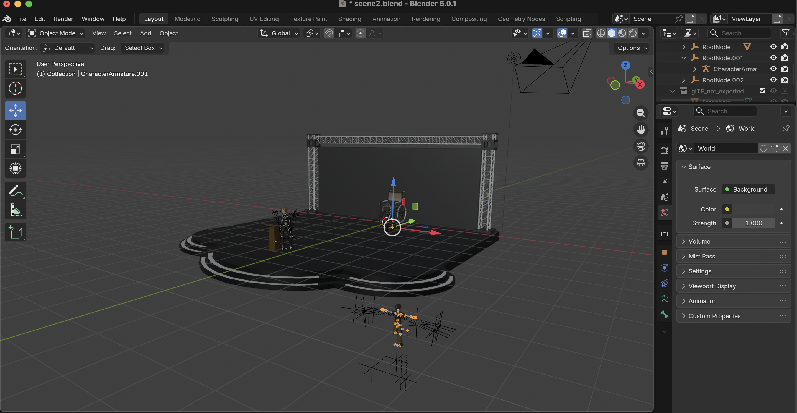
Model animation mix up
04
Use of AI
For this section AI was used mostly as a troubleshooter and helping me figure why my models were not exporting properly. However, after going through all the solutions AI provided I still could not fix the issue. But it did help me narrow down my problem and helped me discover that when exporting my models were mixing up the animation files, so in order to fix it I had to separate the animated models.
05
Reflection
Although the process was frustrating at times, it significantly improved my understanding of 3D workflows and AR pipelines. Troubleshooting issues between Blender and Lens Studio forced me to think more critically about how assets are structured, exported and integrated.